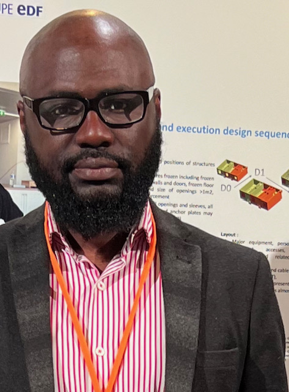

Eric Akinkunmi

Summary
A professional Civil Engineer, Chartered Constrcution Manager and Web Developer with main focus on solving everyday problems and providing great services to Clients.
Education
Masters Degree (MEng Hons)- Civil Engineering - Heriot Watt University (2005-2009)
Work Experience
- Group Head - Investment Delivery
January 2024 - Present
- Management of investments and resources
- Ensuring programmes are delivered in alignment with agreed schedule and budget
- Group Leader - Steelwork and Anchorage
March 2019 - January 2024
- Delegated of Design activities to design engineers
- Ensured deliverables met the required functional, safety and quality standards
- Area Intergration Lead - Infrastures
April 2016 - February 2019
- Responsible for Design change assessment and management
- Coordinated design activities from various supplier to ensure adequated interface management
- Quality Engineer - Process Management
September 2013 - April 2013
- Established and implemented company integrated management process
- Completed management system audits to ensure compliance and provide confidence in quality management system
- Civil Engineer - Construction
September 2009 - April 2013
- Supervision of work carried out on site
- Developement various method statements to specify how work must be completed safely
Skills
- Leadership
- Resource and Budget Management
- Structual Design
- Computer Programming
Award and Certifications
- ISEB Foundation
- Lead Auditor
- Project Management
Hobbies
- Reading
- Football
- Content Creation